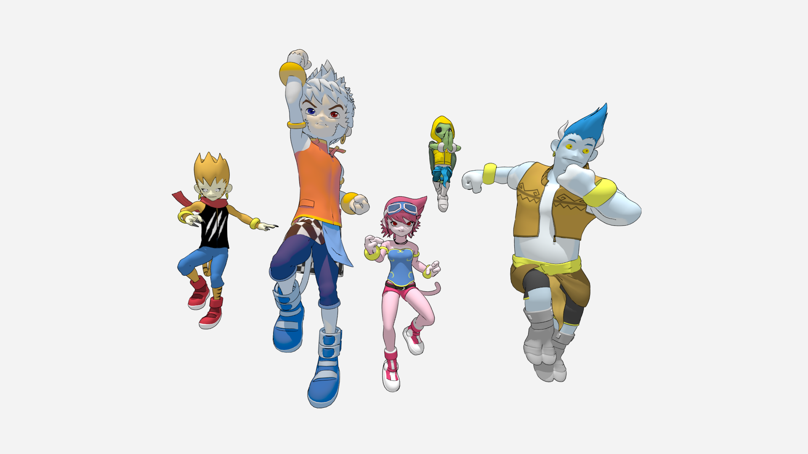

简介¶
Freestyle is an edge/line-based non-photorealistic (NPR) rendering engine. It relies on mesh data and Z-depth information to draw lines on selected edge types. Various line styles can be added to produce artistic ("hand drawn", "painted", etc.) or technical (hard line) looks.
The two operating modes: Python Scripting and Parameter Editor -- allow a powerful diversity of line styles and results. Line styles such as Japanese big brush, cartoon, blueprint, thickness-with-depth are already pre-scripted in Python. The Parameter Editor mode allows intuitive editing of features such as dotted lines and easy setup of multiple line types and edge definitions. On top of all of that, with line style modifiers, the sky is the limit!

ATV buggy by Rylan Wright (RONIN). CC BY. (File:AtvBuggy.zip)¶ |

By mato.sus304. CC BY-SA. (File:Mato_sus304_cut02.zip)¶ |

A cartoon scene from OHA Studio © Mechanimotion Entertainment. (blend-file)¶ |

Blueprint render of Martin M-130 from 1935 by LightBWK. CC0. Warning: heavy file! designed for stress test Blender to the limits and may crash Blender. (File:M-130Blueprint.zip)¶ |
整体结构¶
Activate Freestyle by the checkbox.
Freestyle settings are located in the View Layer properties.
One view layer can only have one view map. A view map holds the edge detection settings (Crease Angle, Culling toggle, Face Smoothness toggle, Material Boundaries toggle, Sphere Radius, and Kr Derivative Epsilon advanced options).
A view map can have multiple Line Sets.
一个line set控制哪种线条类型和选项将被用于渲染，基于你场景中的线条。
Each line set uses one line style (which can be shared between multiple Line Sets).
A line style tells Freestyle how to render the linked Line Sets in terms of color, alpha, thickness and other aspects.

Block diagram of Freestyle view map and processes.¶
已知的局限性¶
Highly memory demanding: All mesh objects in a view layer are loaded at once.
Only faced mesh objects are supported.
面与面相交出无法检测到边缘。
Freestyle rendering results do not have any Z depth information.
不支持全景相机。